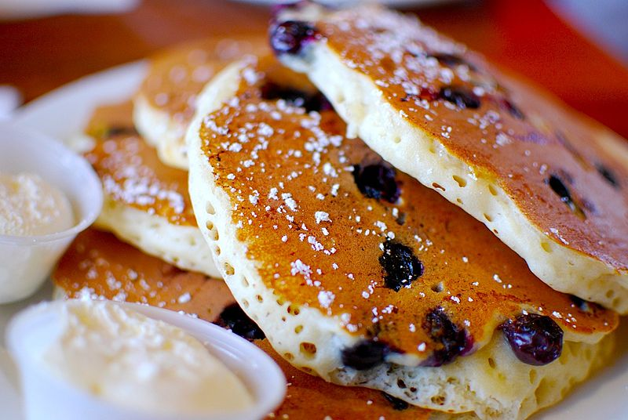

Pancakes

Description
A pancake (or hotcake, griddlecake, or flapjack) is a flat cake, often thin and round, prepared from a starch-based batter that may contain eggs, milk and butter and cooked on a hot surface such as a griddle or frying pan, often frying with oil or butter. It is a type of batter bread.
Ingredients
- Flour
- Baking Powder
- Sugar
- Salt
- Milk and butter
- Egg
Steps
- Sift the dry ingredients together
- Make a well, then add the wet ingredients. Stir to combine
- Scoop the batter onto a hot griddle or pan
- Cook for two to three minutes, then flip
- Continue cooking until brown on both sides